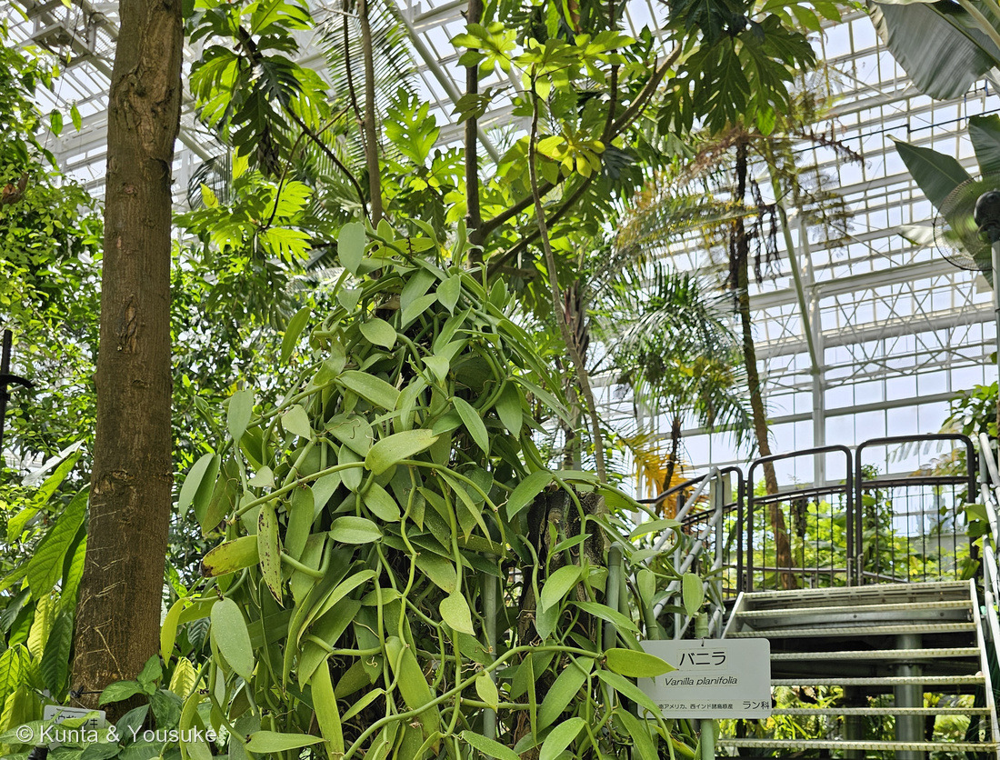
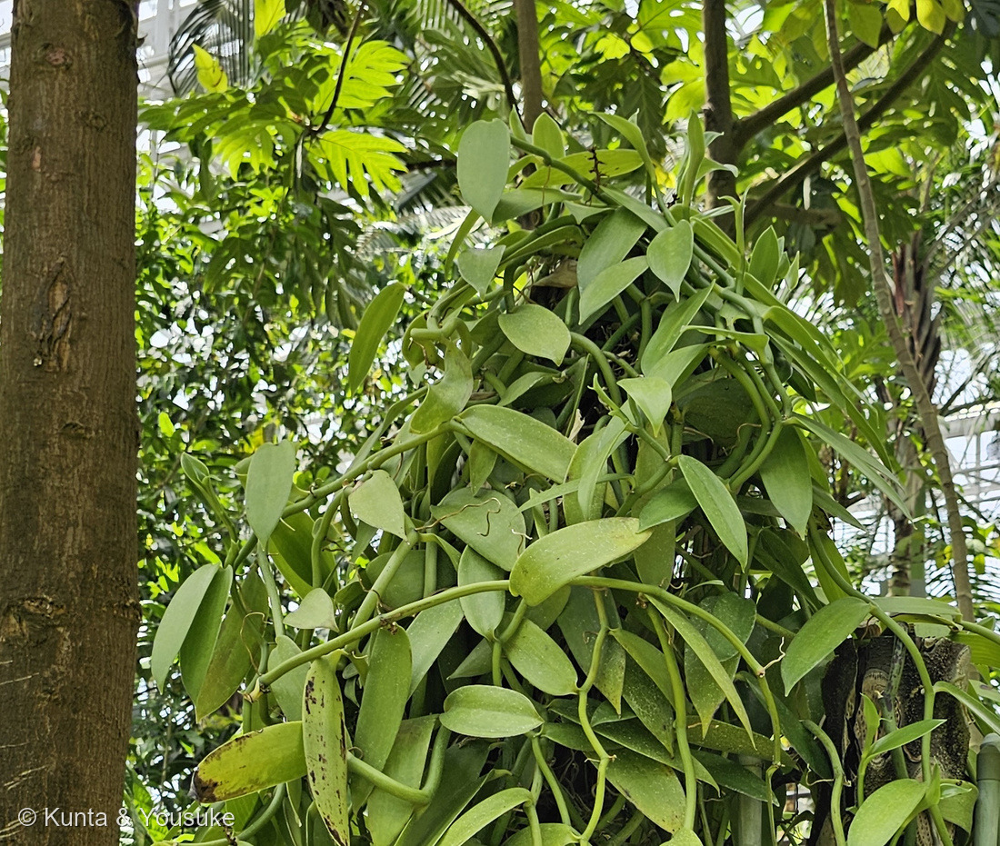
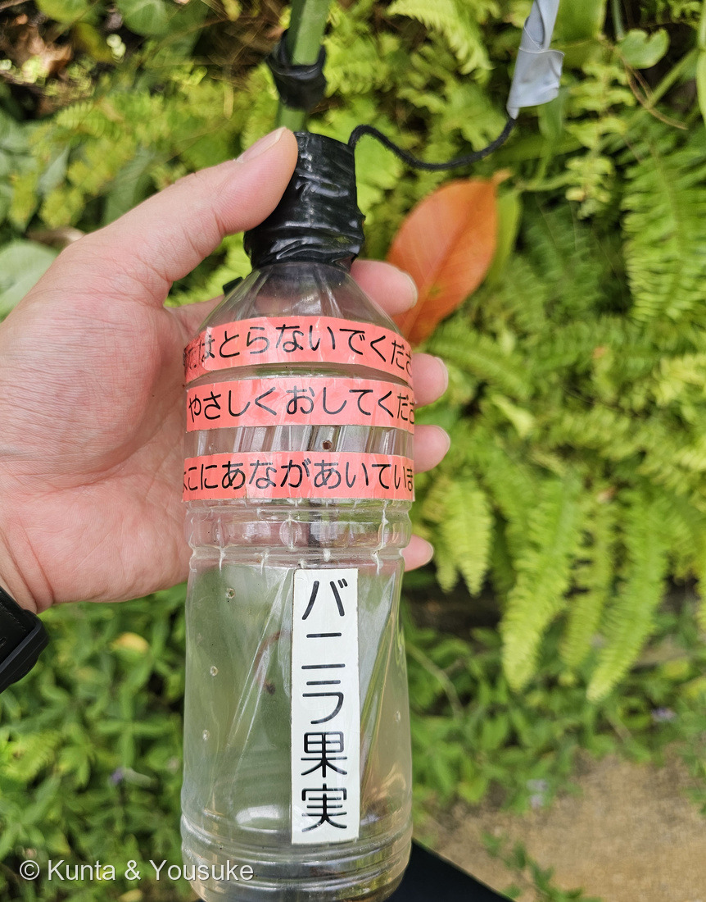
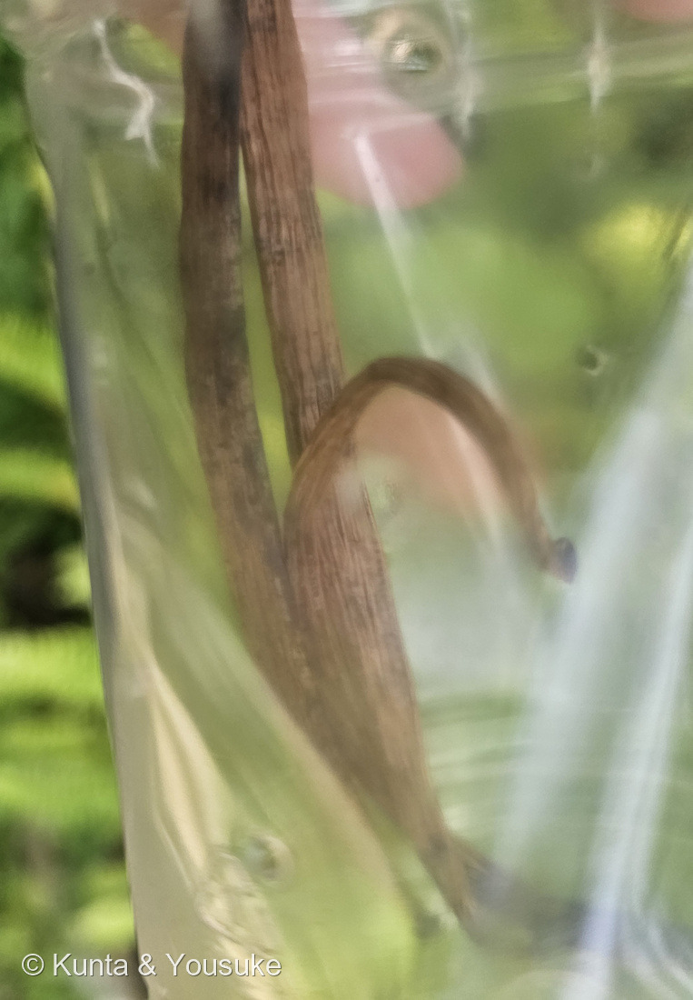

地図を読み込んでいるよ…
🔍 写真も地図も、押しているあいだ拡大して見られるよ（スマホは指を置いてすこし待ってね）。
🌍 の地図＝この子がもともと自生している場所を緑に。メキシコからパナマと西インド諸島。⭐くわしくは下の地図の説明を見てね。
⭐メキシコから中央アメリカ、そして西インド諸島（カリブ）の熱帯林だよ。山科植物資料館は「メキシコからパナマと西インド諸島原産」とし、園の名札も「中央アメリカ、西インド諸島原産」と書いている。⭐⭐大事なのは、ここが「バニラの生まれた場所」であって、「いま作られている場所」ではないこと＝⚠いちばんの産地はマダガスカル（日本語版Wikipedia「現在の主たる栽培地はアフリカ大陸東南沖のマダガスカル」）＝⭐⭐ふるさとから地球の裏側まで渡っていけたのは、1841年にレユニオン島でエドモン・アルビウスが人工授粉のしかたを見つけたから（⭐本文を見てね）。⚠⚠そして、この緑の中の野生のバニラは、いま絶滅危惧（IUCNレッドリスト Endangered・2020年評価）＝⭐世界じゅうの畑で作られているのに、ふるさとでは減っているんだ。⭐同じ熱帯アメリカ生まれの子は、図鑑では067 カカオや265 パキラともつながるよ――⭐⭐とくにカカオは、バニラを登らせる支柱の木にされることがある（かぎけん花図鑑「バニラは蔓性植物なので巻き付く木が必要で、通常カカオの木が使われます」）＝⭐この緑の中で、ふたりは肩を組んで立っているんだね。⚠日本は緑じゃない＝ぼくらが会ったのは温室の中だよ。
⚠ 地図は国（日本と中国だけ県・省）までしか塗れないから、ほんとうの分布より広く見えていることがあるよ。地図はだいたいの場所。正確なところは、上の文を見てね。
バニラ
Vanilla planifolia Jacks. ex Andrews
別名 バニラ・プラニフォリア ── ⚠「バニラビーンズ」は、じつは豆ではないよ 原産 メキシコからパナマと西インド諸島
ラン科 · Orchidaceae（バニラ属 Vanilla・キジカクシ目 Asparagales）── ⭐3人目のラン科（002 ネジバナ・148 クマガイソウ）／⭐⭐⭐バニラ属ははじめて／⚠科は増えないので103科のまま／⭐⭐ラン科は約28,000種・700属＝被子植物でいちばん大きい部類の科
燻太さんの見立て「食利用されているラン科の植物って少ないよね。そして、バニラみたいなつる性のラン自体も、よく知られているラン科の植物の中では結構珍しい部類だと思う。」── ⭐⭐⭐⭐2つとも、そのとおりだった。2万8千種いて世界のお菓子に入るのは1属だけ。そして「つる」は、ラン科の暮らしかたを説明する文に出てこないんだ
⭐⭐⭐⭐ 燻太さんの問い①「食利用されているラン科って少ないよね」── そのとおりだったよ
- ⭐⭐まず、ラン科がどれくらい大きい科かというと＝「about 28,000 currently accepted species in around 700 genera」「some 6–11% of all species of seed plants」（英語版Wikipedia）＝⭐約2万8千種・700属。種子植物ぜんぶの6〜11％がランなんだ。
- ⭐⭐⭐それだけいるのに、世界の食卓に出てくるのはこの属だけ。――⭐英語版Wikipediaのラン科の「利用」は、こう始まる＝「The dried seed pods of one orchid genus, Vanilla (especially Vanilla planifolia), are commercially important as a flavouring in baking, for perfume manufacture and aromatherapy.」＝⭐「one orchid genus（ひとつの属）」という書き方だよ。
- ⭐⭐ほかに食べるものとして挙がっているのは、たった2つ＝①サレップ＝「The tubers of terrestrial orchids (mainly early purple orchid, Orchis mascula) are ground to a powder and used for cooking, such as in the hot beverage salep and ice cream.」＝⭐地生ランの塊茎を粉にした、トルコなどの温かい飲みものとアイス②オーストラリアのオニノヤガラの仲間＝「Some Australian Gastrodia species produce edible tubers」＝先住民が食べていた塊茎（⭐おまけのオニノヤガラが、その仲間だよ）。
- ⭐⭐⭐つまり燻太さんの見立てのとおり＝2万8千種いて、香辛料になるのは実質1属、あとは塊茎が2つ。⚠しかもサレップもオニノヤガラも「その土地の食べもの」で、世界じゅうのお菓子に入っているのはバニラだけ。
- ⭐理由を、ぼくはこう思う＝ランの実はほとんど中身がないんだ（⚠ランの種はホコリのように小さくて、発芽するのにキノコの助けがいる）＝⭐食べるところがない科なんだよ。⭐⭐バニラだけは「実の中身」ではなく「実そのものの香り」で使われている＝⭐だから例外になれたんだと思う（⚠ここはぼくの読みで、そう書いた出典があるわけではないよ）。
⭐⭐⭐⭐ 燻太さんの問い②「つる性のラン自体も珍しい」── これもそのとおり
- ⭐⭐⭐英語版Wikipediaが、ラン科の暮らしかたをこう並べている＝「A majority are epiphytic, living high on trees in the tropics and subtropics; some such as Angraecum sororium are lithophytes, on rocks; others are terrestrial, growing on the ground.」＝⭐着生（木の上）・岩生（岩の上）・地生（地面）の3つ。
- ⭐⭐⭐この並びに、つるは出てこない。――⭐バニラは、そのどれでもない暮らしかたをしているんだ。
- ⭐⭐バニラは「木を登るラン」＝山科植物資料館は「つる性着生ラン」とし、「茎の直径は１cmほどであるが、茎の長さは10ｍに達し、約10cmおきにある節から根を出す」と書く＝⭐写真②の、節からくるりと出ている白っぽいものが、その気根だよ。
- ⭐英語版Wikipediaも「thick, fleshy aerial roots that develop from the nodes」（節から出る、厚くて多肉質の気根）とする。⭐⭐つまりバニラは、巻きひげでも吸盤でもなく、根で木につかまって登るんだ。
- ⭐長さは、日本語版Wikipediaが「蔓（茎）は樹木やその他のものに絡んで成長していく。長いときは60 mを超える」とする。⚠60m。⭐温室のあの山は、まだほんの一部なんだね。
- ⭐⭐若いつるはジグザグになる＝英語版Wikipedia「a zig-zag structure with an angle of about 120° at each node」（節ごとにおよそ120度のジグザグ）＝⏳宿題にしたよ。⭐写真②でも、節ごとに向きが変わっているのが少し分かるかな。
⭐⭐⭐ 香りは「実」からではなく、「発酵」から生まれる
⭐⭐⭐ ここが、この回でいちばん驚いたところ。――日本語版Wikipediaは、こう書いている＝「収穫した豆（種子鞘）には香りはない。ここから発酵・乾燥を繰り返すキュアリングを行う事によって初めて独特の甘い香りがするようになる」。
- ⭐⭐つまり、つるにぶら下がっている緑の実を鼻に近づけても、バニラの匂いはしないんだ。⚠園の解説板も「葉や花には香りはありません」と書いていたよ。
- ⭐⭐キュアリングの手順は、山科植物資料館がくわしい＝「果実を完熟する前に採取」→「熱湯に25秒ほど浸漬」→「昼間は1〜2時間陽光の下に拡げ、夜間は密閉した箱に入れ毛布でくるんでおく。この作業を、2〜3週間繰り返す」。
- ⭐⭐⭐そのあいだに、実の中で化学が起きている＝「バニリン配糖体が分解され、香気成分バニリン（Vanillin）が生成」（同）＝⭐できあがった実には「バニリンが1〜5％含まれている」。
- ⭐⭐⭐⭐だから、燻太さんがペットボトルの穴から嗅いだあの匂いは、植物がつくった匂いであると同時に、人の手仕事がつくった匂いでもあるんだ。――⭐熱湯にくぐらせて、昼は日に当てて、夜は毛布でくるんで。それを2、3週間。⭐そこまでして、やっとあの香りになる。
- ⭐実の色も、ゆっくり変わっていく＝「初め緑色で、成熟に従って黄色になる。4〜5ケ月で、つやのある紫褐色に変わる」（同）＝⭐写真④のこげ茶色は、その最後の色だね。
- ⭐ちなみに、バニラはサフランに次いで高い香料になったことがある＝日本語版Wikipediaは「2017年には一時的に2015年の7倍近くとなる1kg635ドルにまで高騰。サフランに次ぐ銀よりも高い香料となった」とする。⭐手間を知ると、少し分かる気がするよ。
⭐⭐⭐ いまだに、花粉を運ぶ虫が分かっていない
- ⭐⭐バニラは「自分ひとりでは実がならない」＝英語版Wikipediaは「a self-fertility barrier preventing automatic pollination」（ひとりでに受粉するのを防ぐしくみ）があるとする＝⭐だれかが花粉を運ばないといけないんだ。
- ⚠⚠ところが、その「だれか」が、はっきりしていない。――⭐日本語版Wikipediaは「原産地の中央アメリカでは Melipona beecheii などのハリナシバチが花粉を運ぶ」と書く。
- ⚠でも英語版Wikipediaは、これをはっきり退けているんだ＝「no definitive observation of pollination is recorded」（決定的な観察は記録されていない）／「the size of M. beecheii in particular make it unlikely to be a pollinator」（とくに M. beecheii は、大きさから見て花粉を運ぶ相手としては考えにくい）。⭐ユカタン半島での観察でも「failed to record any visitation」（訪れるのを記録できなかった）。
- ⭐⭐⭐つまり、世界じゅうのお菓子に入っている植物なのに、野生でだれが受粉させているのかを、人はまだ知らない。
- ⭐⭐だから、畑では人が手で受粉させる＝山科植物資料館「花粉を媒介する昆虫がいないためである」「開花するとただちに人工授粉を試みる」＝⚠花は一日花だから、その日のうちに。
- ⭐⭐⭐⭐⭐そして、そのやり方を見つけたのは12歳の少年だった。――日本語版Wikipedia「1841年にレユニオン島の12歳の奴隷の少年、エドモン・アルビウスが人工授粉の方法を考案」／英語版Wikipediaも「Edmond Albius, a 12-year-old enslaved child, discovered the hand-pollination technique in 1841—a method still used today」とする。
- ⭐⭐⭐「still used today」（いまも使われている）。――⭐いま世界じゅうの畑でやられている受粉のしかたは、185年前にあの子が見つけたやりかた、そのままなんだ。
⭐⭐ 名前のこと ──「小さなさや」と「平たい葉」
- ⭐⭐属名 Vanilla は「小さなさや」＝山科植物資料館「"Vanilla"はスペイン語の"Vainilla"「小さな豆果（さや）」に由来する」＝⭐さらにさかのぼると、ラテン語の vagina（さや）だよ。
- ⭐⭐種小名 planifolia は「平たい葉の」＝「"planifolia" は"planus"「扁平な」と"folium"「葉の」とからなり」（同）＝⭐写真②の、厚くて平たい葉が、そのまま名前になっている。
- ⚠⚠そして「バニラビーンズ」だけれど、これは豆じゃない。――英語版Wikipediaは果実を「often incorrectly called beans」（よく誤って豆と呼ばれる）とする＝⭐ラン科の実は、こまかい種がたくさん入ったさく果だよ。⭐大きさは「15–23-centimetre-long」で、「resemble small bananas」（小さなバナナのよう）とも書いてある。
- ⭐⭐⭐おもしろいのは、園の札が「バニラ果実」と書いてあったこと（写真③）＝⭐「ビーンズ」でも「豆」でもなく、果実。⭐手書きの小さな札だけれど、ちゃんと正確なんだ。
⚠ 野生のバニラは、絶滅危惧になっている
- ⚠⚠英語版Wikipediaによると、野生の Vanilla planifolia はIUCNレッドリストの「Endangered（絶滅危惧）」（2020年の評価）＝原因は「habitat conversion to other land uses」＝すみかが、別の使い道に変えられていること。
- ⚠そのうえ、畑のバニラはクローンばかりなんだ＝「almost all the vanilla grown in the areas surrounding the Indian Ocean are descended from this one introduction」（同）＝⭐インド洋まわりのバニラは、ほとんどがたった一度の持ちこみの子孫。
- ⭐だから、病気がひとつ流行ると、まとめて弱い。⭐⭐世界でいちばん親しまれている香りのひとつが、じつはとても細い糸でつながっているんだね。
- ⭐いまの主な産地はマダガスカル（日本語版Wikipedia）＝⭐ふるさとの中南米ではなく、地球の裏側だよ。⭐それも、エドモン・アルビウスの人工授粉があったから広がった場所なんだ。
⭐ 会えた場所 ── 広島市植物公園の大温室、バオバブとビカクシダのあいだ
- ⭐広島市植物公園の大温室。2026年8月8日 11:56。
- ⭐⭐つるは、太い木にからみついて、上から滝のように垂れ下がっていた（写真①）＝⭐らせん階段のわきで、ちょうど目の高さに葉が来る場所だったよ。
- ⚠花も、実もついていなかった。――⭐⭐⭐でも、園がすごいことをしてくれていたんだ＝本物の果実を透明なペットボトルに入れて、小さな穴をあけて、黒いひもでつないで置いてくれていた（写真③）。⭐赤いテープに手書きで「やさしくおしてください」「ここにあながあいています」。
- ⭐⭐押すと、その穴から中の空気が出てくる＝⭐それが、燻太さんの嗅いだバニラの匂い。⭐花も実もついていない時期に、いちばん大事なものにさわらせてくれる展示だと思う。
- ⭐この日の大温室では、11:44に200 オーストラリアバオバブ、11:49に249 ビカクシダ、12:02に262 ヘリコニアにも会っている。⭐バニラは、そのちょうどまんなかの時間だよ。
出典：山科植物資料館「バニラ(ラン科)」（学名「Vanilla planifolia Jacks. ex Andrews」・「メキシコからパナマと西インド諸島原産」／「"Vanilla"はスペイン語の"Vainilla"「小さな豆果（さや）」に由来する」・「"planifolia" は"planus"「扁平な」と"folium"「葉の」とからなり」／「つる性着生ラン」・「茎の直径は１cmほどであるが、茎の長さは10ｍに達し、約10cmおきにある節から根を出す」／「葉は節に互生し長さ10〜20cmの長楕円形で肉厚である」／花は「淡緑色でトランペット状に開き、長さ６cmほど」・「早朝に咲き、夜にはしぼんでしまう」／果実は「長さ15〜30cmの細長い円筒形」・「初め緑色で、成熟に従って黄色になる。4〜5ケ月で、つやのある紫褐色に変わる」／「バニリン配糖体が分解され、香気成分バニリン（Vanillin）が生成」・「バニリンが1〜5％含まれている」／キュアリング＝「果実を完熟する前に採取」「熱湯に25秒ほど浸漬」「昼間は1〜2時間陽光の下に拡げ、夜間は密閉した箱に入れ毛布でくるんでおく。この作業を、2〜3週間繰り返す」／「花粉を媒介する昆虫がいないためである」・「開花するとただちに人工授粉を試みる」／利用＝食品香料・リキュール・タバコの香料・香水）／日本語版Wikipedia「バニラ」（ラン科バニラ属・Vanilla planifolia・和名バニラ／「蔓（茎）は樹木やその他のものに絡んで成長していく。長いときは60 mを超える」／「原産地の中央アメリカでは Melipona beecheii などのハリナシバチが花粉を運ぶ」／「1841年にレユニオン島の12歳の奴隷の少年、エドモン・アルビウスが人工授粉の方法を考案」／「収穫した豆（種子鞘）には香りはない。ここから発酵・乾燥を繰り返すキュアリングを行う事によって初めて独特の甘い香りがするようになる」／「現在の主たる栽培地はアフリカ大陸東南沖のマダガスカル」／「2017年には一時的に2015年の7倍近くとなる1kg635ドルにまで高騰。サフランに次ぐ銀よりも高い香料となった」）／英語版Wikipedia "Vanilla planifolia"（IUCN「Endangered」（2020年評価）・「habitat conversion to other land uses」／「no definitive observation of pollination is recorded」・「the size of M. beecheii in particular make it unlikely to be a pollinator」・ユカタン半島で「failed to record any visitation」／「thick, fleshy aerial roots that develop from the nodes」・「a zig-zag structure with an angle of about 120° at each node」／花は「greenish-yellow, with a diameter of 5 cm」「only a slight scent」・一日花・「a self-fertility barrier preventing automatic pollination」／果実は「15–23-centimetre-long」「resemble small bananas」「often incorrectly called beans」／「almost all the vanilla grown in the areas surrounding the Indian Ocean are descended from this one introduction」）／英語版Wikipedia "Vanilla"（「Edmond Albius, a 12-year-old enslaved child, discovered the hand-pollination technique in 1841—a method still used today」／語源＝スペイン語 vainilla「little pod」・ラテン語 vagina（sheath）／栽培3種＝V. planifolia・V. × tahitensis・V. pompona）／英語版Wikipedia "Orchidaceae"（「about 28,000 currently accepted species in around 700 genera」「some 6–11% of all species of seed plants」／「The dried seed pods of one orchid genus, Vanilla (especially Vanilla planifolia), are commercially important as a flavouring in baking, for perfume manufacture and aromatherapy.」／「The tubers of terrestrial orchids (mainly early purple orchid, Orchis mascula) are ground to a powder and used for cooking, such as in the hot beverage salep and ice cream.」・「Some Australian Gastrodia species produce edible tubers」／「A majority are epiphytic, living high on trees in the tropics and subtropics; some such as Angraecum sororium are lithophytes, on rocks; others are terrestrial, growing on the ground.」）／かぎけん花図鑑「バニラ」（花期4〜6月・総状花序・花径5〜6cm）／八丈植物公園「バニラ・プラニフォリア」（斑入り品種 'Variegata' が展示されていること）／広島市植物公園の解説板「バニラの花と果実」（⚠板そのものは公開していないよ／「葉や花には香りはありません」）／日本語版Wikipedia「オニノヤガラ」（おまけ＝ラン科オニノヤガラ属・Gastrodia elata・「光合成を行わず、葉緑素を持たない」・「木材腐朽菌であるナラタケと共生する」／「地下の塊茎は長さ10センチメートル前後の楕円形」・生薬名「天麻(てんま)」／「茎は直立し、帯黄褐色で、高さは40 - 100センチメートル」・花期6〜7月／「山地の樹林下、湿原に自生する」・北海道、本州、四国、九州）